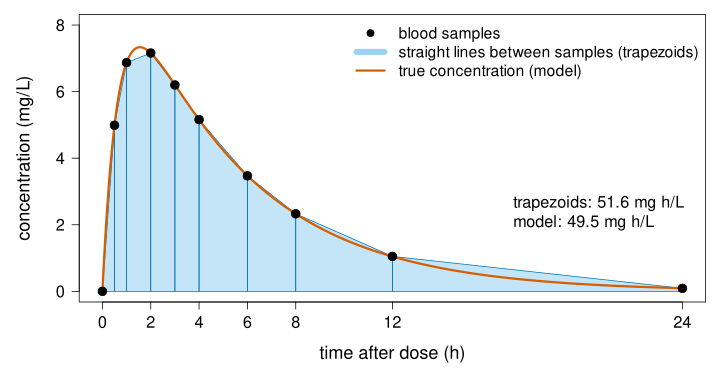
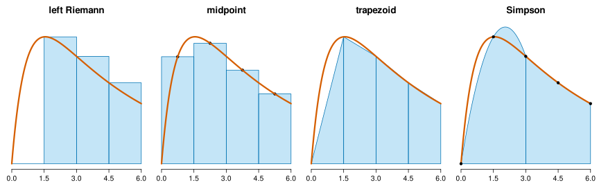
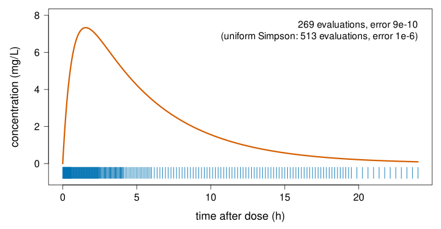
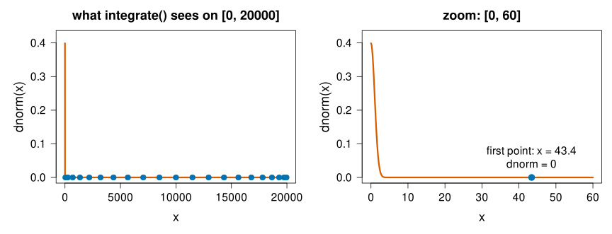
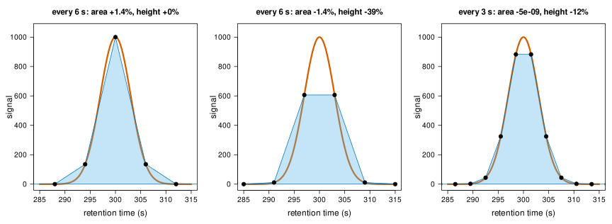

Part 7 — Numerical differentiation and integration
Numerical analysis for biologists
About this lecture
In Why numerical analysis?integrate(dnorm, 0, 20000) returned 0, with an error estimate of 0. This lecture explains why, and how integrals are computed.
An integral is an area. Every method adds up finitely many function values with weights: \int_a^b f(x)\,dx \approx \sum_i w_i f(x_i).
Riemann, trapezoid and Simpson rules, made composite; their order read off a log–log plot. Order needs a smooth integrand.
Romberg (Richardson again), adaptive quadrature and Gaussian quadrature: what integrate and scipy.integrate.quad do inside.
Why a library misses a peak, and the fixes: split the interval, transform it, give the scale. Infinite intervals and singularities by substitution.
Biology: AUC in pharmacokinetics from blood samples, peak areas in chromatography and mass spectrometry, normalising a probability density.
A biology problem first
An oral drug, 500 mg. Ten blood samples over 24 h. The area under the curve (AUC, mg·h/L) measures total exposure; bioequivalence of two formulations is judged on the ratio of their AUCs (accepted range 80–125 %).
The data are the model rounded to 2 decimals, so the true AUC is 49.53. Straight lines between samples give 4 % too much. Why, and which method should we trust?
Where the 4 % comes from

Between 12 h and 24 h the straight line lies far above the curve: the curve bends upwards (convex), the chord cuts across.
Near the peak the line lies below. The errors partly cancel; here the tail wins.
Integrals as sums: four rules

Split [a, b] into n intervals of width h = (b-a)/n. Within each interval, replace f by something simple:
Left Riemann: a constant, f at the left end. Midpoint: a constant, f at the middle.
Trapezoid: a straight line through both ends. Simpson: a parabola through both ends and the middle.
The trapezoid rule
One interval: the area of a trapezoid, \int_{x_0}^{x_1} f\,dx \approx \tfrac{h}{2}\,(f_0 + f_1).
Composite: add up n of them. Inner points are shared by two trapezoids:
simpson <-function(f, a, b, n) { # n must be even x <-seq(a, b, length.out = n +1); h <- (b - a) / n w <-c(1, rep(c(4, 2), n /2-1), 4, 1) h /3*sum(w *f(x))}err <-sapply(c(4, 8, 16, 32), function(n) simpson(model, 0, 6, n) - exact)err[-4] / err[-1]# [1] 11.21479 14.39510 15.56133
Ratios approach 16= 2^4: order 4. Same function values as the trapezoid, other weights.
Bonus: Simpson is exact for cubics, not just parabolas (the exercise checks it by hand).
\sqrt{x} has an infinite slope at 0: trapezoid and Simpson drop to order 1.5. 1/\sqrt{x(1-x)} is infinite at both ends: the midpoint rule crawls at order 0.5 (and the trapezoid gives NaN).
Check: halve h and compute \log_2 of the error ratio (or of the ratio of successive differences, if the answer is unknown). If it is not the promised order, the integrand is not smooth: a kink, a jump, an infinite slope.
Recap: Richardson extrapolation
From Numerical differentiation: if an estimate has error \approx C h^2, two estimates cancel the h^2 term.
T(h) \approx I + C h^2, \quad T(h/2) \approx I + C h^2/4 \quad\Rightarrow\quad I \approx \frac{4\,T(h/2) - T(h)}{3}
One extrapolation turns two trapezoids into Simpson, exactly. The new error is O(h^4).
Romberg integration
Halve h again and again, and extrapolate column by column: column j removes the h^{2j} term.
romberg <-function(f, a, b, k) { R <-matrix(NA, k, k)for (i in1:k) { R[i, 1] <-trap(f, a, b, 2^(i -1)) # h halved each rowfor (j inseq_len(i -1) +1) # Richardson, column by column R[i, j] <- R[i, j-1] + (R[i, j-1] - R[i-1, j-1]) / (4^(j-1) -1) } R}signif(abs(romberg(model, 0, 6, 6) - exact), 2)[6, ]# [1] 4.6e-02 2.6e-04 7.7e-06 8.7e-07 2.9e-07 2.0e-07
With the same 33 function values: trapezoid error 5\times10^{-2}, Romberg 2\times10^{-7}.
Fails when the error is not a series in h^2: for \sqrt{x} the last row only improves from 1\times10^{-3} to 4\times10^{-4}. And on data you cannot halve h.
Adaptive quadrature: points where they are needed
Estimate the error on each piece from two rules; split only the pieces where they disagree.
adapt <-function(f, a, b, fa, fm, fb, tol) { m <- (a + b) /2; fl <-f((a + m) /2); fr <-f((m + b) /2) S1 <- (b - a) /6* (fa +4* fm + fb) # 1 Simpson panel S2 <- (b - a) /12* (fa +4* fl +2* fm +4* fr + fb) # 2 panelsif (abs(S2 - S1) <15* tol) return(S2 + (S2 - S1) /15) # acceptadapt(f, a, m, fa, fl, fm, tol /2) +adapt(f, m, b, fm, fr, fb, tol /2)}adapt(model, 0, 24, model(0), model(12), model(24), 1e-6) -49.5252069010181# [1] -8.981687e-10
S_2 - S_1 \approx 15 \times (error of S_2): the same Richardson idea gives a free error estimate.
The function calls itself on each half (recursion) until every piece passes.
Where adaptive quadrature puts its points

Dense where the curve bends sharply (absorption, first 2 h), sparse in the slow tail.
Failure: the first 5 points decide where to look. If all of them miss a narrow feature, S_1 = S_2 and the piece is accepted. Next: the library version of that failure.
Gaussian quadrature: choose the points too
So far the points were equally spaced. Choosing where to evaluate as well as the weights doubles the power: n points integrate polynomials up to degree 2n - 1 exactly.
All return a value and an error estimate. The estimate comes from the same points as the value.
Stopping rule: stop when the estimated error < max(abs.tol, rel.tol × |value|). An integral smaller than abs.tol is accepted at once.
Why integrate(dnorm, 0, 20000) is 0
seen <-NULLspy <-function(x) { seen <<-c(seen, x); dnorm(x) } # record every x asked forintegrate(spy, 0, 20000)# 0 with absolute error < 0length(seen); round(sort(seen)[1:4], 1)# [1] 21# [1] 43.4 260.9 698.4 1349.4

The 21 points lie at 43.4 and beyond, where dnorm underflows to exactly 0. Gauss and Kronrod agree (both 0), so the error estimate is 0 and QAGS stops.
Three fixes, and the check
integrate(dnorm, 0, 10)$value +integrate(dnorm, 10, 20000)$value # split# [1] 0.5integrate(dnorm, 0, Inf) # transform# 0.5 with absolute error < 4.7e-05integrate(dnorm, 0, 20) # give the scale# 0.5 with absolute error < 3.7e-05integrate(dnorm, 0, 5000) # the check# 2.326323e-06 with absolute error < 4.6e-06
Split at the feature; transform (an infinite interval is mapped so that its points spread over many scales); give the scale: limits where the function lives.
Check: change the limits or the tolerance a little; the answer must not move. An error estimate as large as the value is a warning.
The Rust crate packs its points at the ends, so it finds the peak at 0, but returns 0 for a peak at 5000 in [0, 20000]. Every finite rule can miss a narrow peak.
Infinite intervals: substitute
\int_0^\infty f(x)\,dx with x = \dfrac{t}{1-t}: t \in [0, 1) covers x \in [0, \infty), and dx = \dfrac{dt}{(1-t)^2}.
integrate(function(x) dnorm(x, mean =5000), 0, Inf)# 0 with absolute error < 0
The transform fixes the range, not the scale: its points reach only x \approx 233. A peak at 5000 is missed. Give the scale: integrate(..., 4950, 5050) returns 1.
Singularities: substitute again
The Jeffreys prior for a proportion (e.g. an allele frequency) is \propto 1/\sqrt{x(1-x)}, infinite at both ends. Its normalising constant is \int_0^1 \frac{dx}{\sqrt{x(1-x)}} = \pi.
jeff <-function(x) 1/sqrt(x * (1- x))jeff(0)# [1] Inf # trapezoid: NaNmid <-function(f, a, b, n) { h <- (b - a) / n; h *sum(f(a + (1:n -0.5) * h)) }sapply(c(16, 256, 4096), function(n) mid(jeff, 0, 1, n)) - pi# [1] -0.30148615 -0.07559745 -0.01890285 # order 0.5integrate(jeff, 0, 1)# 3.141593 with absolute error < 9.4e-06
Substitutex = \sin^2\theta: dx = 2\sin\theta\cos\theta\,d\theta and \sqrt{x(1-x)} = \sin\theta\cos\theta, so the integral is \int_0^{\pi/2} 2\,d\theta = \pi. Smooth (here constant).
For a single 1/\sqrt{x} at 0: x = u^2 turns \int_0^1 \frac{g(x)}{\sqrt{x}}dx into \int_0^1 2\,g(u^2)\,du.
Biology: normalising a probability density
Posterior for the UMI rate \lambda of the zero-truncated Poisson model (Newton and secant methods; 100 cells, flat prior). The density is \propto L(\lambda), and we need Z = \int_0^\infty L\,d\lambda.
L \approx 10^{-23} is far below abs.tol\approx 10^{-4}: integrate accepts its first rough answer. Scale the values: divide by the maximum (log scale, as in How computers store numbers); \log Z = \log L_{\max} + \log 0.3322.
Scale the axis too: integrate(g, 0, 1000) gives 2\times10^{-9}. The peak (width 0.13) is invisible at that scale.
Biology: chromatography and mass-spec peak areas

A peak (Gaussian, \sigma = 3 s) sampled by the detector every h seconds; area by the trapezoid rule.
Every 6 s (h = 2\sigma, 2–3 points across the peak): area within 1.4 %, but the height is off by up to 39 %. Every 3 s: area exact to 5\times10^{-9}, height still off by up to 12 %.
Area is far more robust than height. Real errors come from noise, the baseline and overlapping peaks (fit those: Nonlinear least squares and ODE fitting).
Biology: AUC with linear-up / log-down
After the peak, concentrations fall roughly exponentially. Interpolate \log C linearly there; the area of an exponential segment is \dfrac{(C_1 - C_2)\,\Delta t}{\ln(C_1 / C_2)}.
Total exposure is \mathrm{AUC}_{0-\infty}. Extrapolate the tail with the terminal slope \lambda_z: \int_{t_\text{last}}^\infty C_\text{last}\,e^{-\lambda_z (t - t_\text{last})}\,dt = C_\text{last}/\lambda_z.
Data route (non-compartmental): no model, but error from sparse sampling. Model route: fit, then integrate exactly; but only as right as the model.
Check: compare the two; the extrapolated part should be small (< 20 % of the total). Here: 0.09/0.204 = 0.44, under 1 %.
Checklist: detecting integration trouble
Plot the integrand over the whole interval before integrating. Is there a narrow peak, a kink, a singularity?
Change the limits (and rel.tol) a little: the answer must not move.
Error estimate ≳ value, or exactly 0 → distrust the result.
Tiny values (likelihoods): scale to a maximum of 1 first; abs.tol is absolute.
Wide interval, narrow feature → split at the feature or integrate around it.
Order lower than promised on a halving test → not smooth: split at the kink or substitute.
Data: the rule assumes a shape between samples. Sparse samples where the curve bends are the main error.
Summary
Every quadrature rule is \sum_i w_i f(x_i): it sees only the points it samples.
Composite rules: left Riemann order 1, trapezoid and midpoint order 2, Simpson order 4. Read the order off a log–log plot; it needs a smooth integrand.
Romberg = repeated Richardson on the trapezoid. Adaptive quadrature splits where two rules disagree. Gaussian quadrature chooses the points: n points, degree 2n-1.
integrate / quad: 21-point Gauss–Kronrod, bisect the worst piece. They can miss a narrow feature with a confident error estimate of 0. Fixes: split, transform, give the scale.
Infinite intervals and singularities: substitute (x = t/(1-t), x = u^2, x = \sin^2\theta).
Biology: AUC from samples (trapezoid, linear-up/log-down, extrapolation C_\text{last}/\lambda_z), peak areas (robust; heights are not), normalising a density (scale first).
Next:Random numbers and Monte Carlo, for integrals in many dimensions, where grids are hopeless.